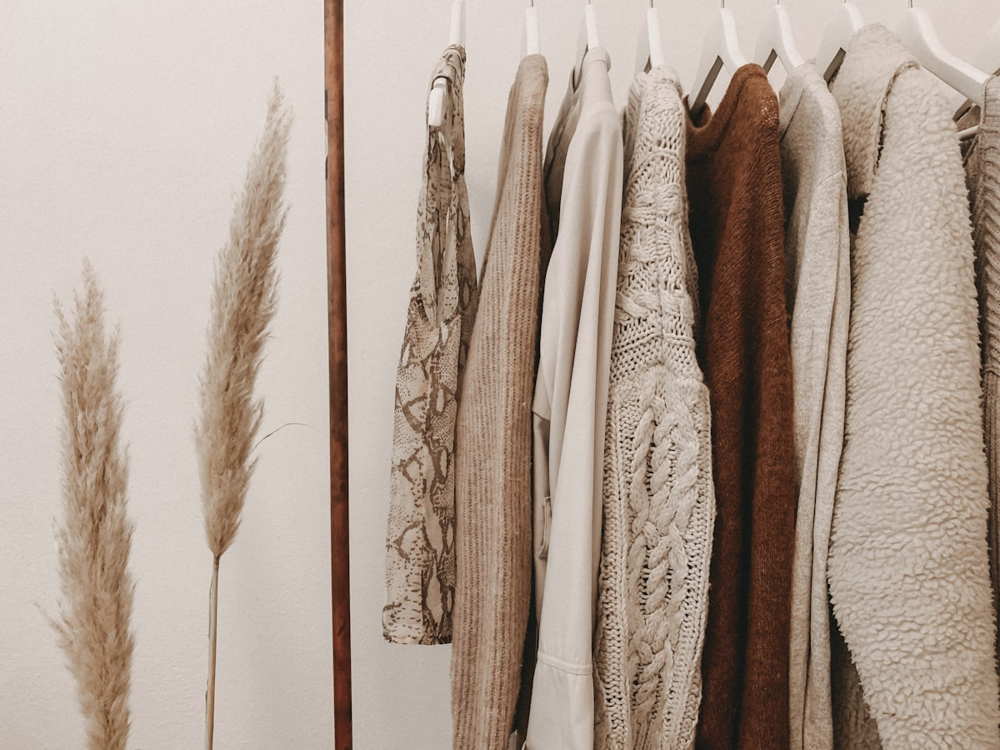
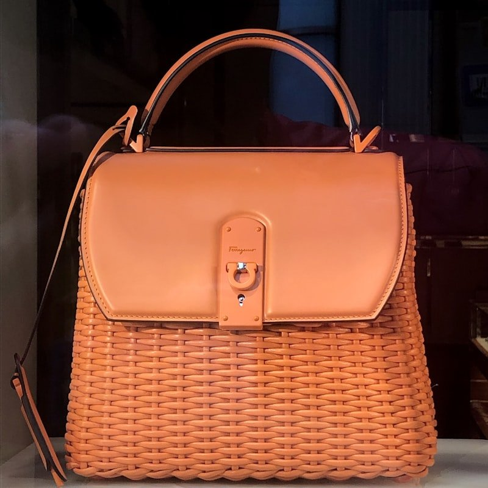

Tensile Kinetics of Hand-Braided Leather
Biomechanical analysis of multi-strand leather braiding friction, burst resistance, and load distribution compared to machine seams.

River Tannery Traditions & Botanical Barks
Chemical ecology of organic chestnut, mimosa, and quebracho tannins in slow river water pits and their preservation mechanics.
The Fifty-Year Patina: Natural Care Protocol
Lipid oxidation dynamics of full-grain saddle leather and empirical conditioning formulas using organic beeswax and neat's-foot oil.
Solid Brass Metallurgy in Leather Hardware
Sand-mold casting thermodynamics, cold-burnishing, and metallurgical corrosion resistance of non-ferrous bag hardware.

Geometry of the Drawstring Pouch
Spherical volume calculus, circular gusset mathematics, and eight-strand cinch channel architecture in pouch design.
Endangered Benchwork: Awls & Linen Thread
The historical legacy of antique French leathercraft tools, hand-waxed flax thread, and double-needle saddler joinery.